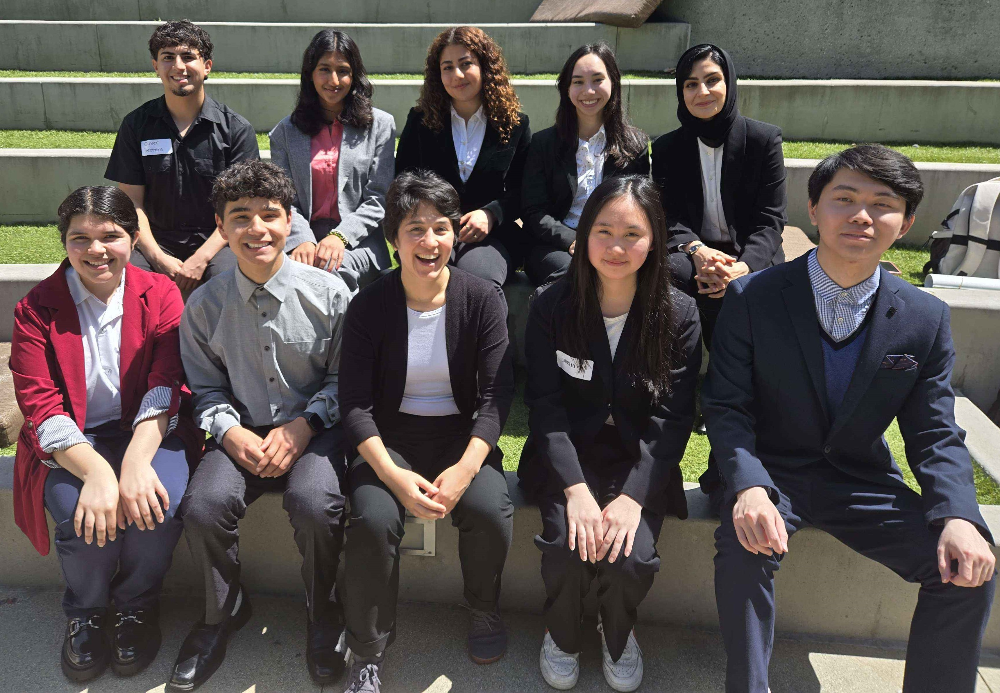
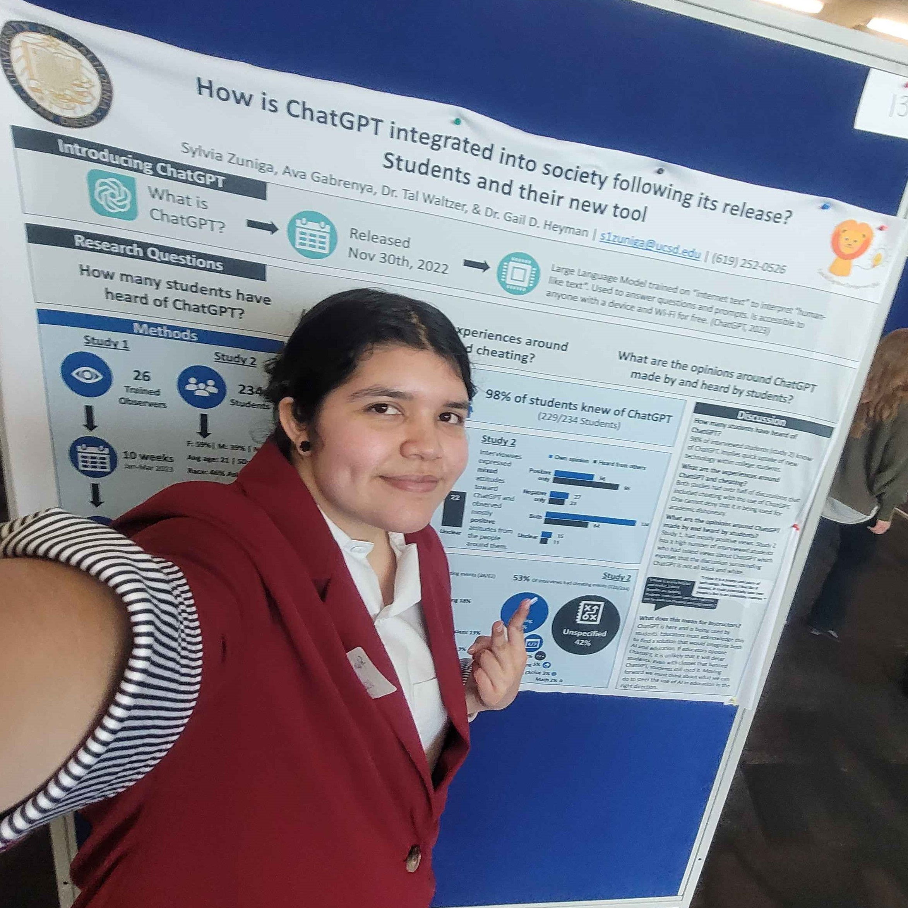

Home
Welcome to my personal website.
I am a UC San Diego Chancellor's Associates Scholar graduating in the spring of 2025 with a B.S in Cognitive Psychology and a minor in Cognitive Science.
I am interested in research topics in the Cognitive and Social Psychology fields.
I am specifically interested in social norms, problem solving, decision making, and human learning.
I have been a research assitant at the Social Cognitive Development Lab at UCSD under Dr. Gail D. Heyman since the summer of 2023 conducting research on attitudes and interactions between people and ChatGPT.
Here is a link to my CV(last updated Nov 2024)
Website Structure:
- About: To learn more about me, click here.
- Research: To learn more about my research and my experience, click here.
- Contact: To find my list of contact information, click here.
- Pictures: To look at pictures of me and my team, click here.
About
Who am I?
Hello! My name is Sylvia and I am a queer Mexican-American woman born in Chula Vista, California. I am a curious person who was always intrested in the "why" questions of the world. I was always interested in why we, as humans, do the things we do? I love proposing new research questions to current research and understanding how much one method of research can answer. I hope in the near future, the general public has easy access to all forms of research papers and that research from all fields is more highly regarded.How I Got Here
For most of my life, I grew up in a Mexican community, feeling like I belonged almost everywhere I went. I attended schools with bilingual learning structures teaching both English and Spanish. While growing up, I was attracted to robotics. I made my first robot in middle school with the purpose of being a sumo robot. From then on, I was interested in figuring out how things worked and how to solve problems with machines. I liked having the ability of creating something for a purpose. I wanted to make robots to help others. I joined my highschool's robotics team my first year and competed in VEX and FRC competitions. With this interest in creating robots, I was admitted to UC San Diego's Mehcanical Engineering program and as a Chancellor's Associates Scholar .However, my interest shifted when I was exposed to Cognitive Psychology for the first time. I was taking psychology classes for my GEs and took a Cognitive Psychology 101 class. That is where I discovered that those why questions I had always carried with me could be answered by all branches of psychology. Half way through my first year of college, I changed my major to Cognitive Psychology and shifted my focus from machines to people.
In my second year as a Psychology student, I joined UCSD's Psi Chi branch to further extend my connections in the field. In my spring quarter of that year, I attended a professor talk after a Psi Chi cohort meeting. That is where I met my current PI, Dr. Gail D. Heyman. She was talking about her research in Developmental Psychology and spoke about the classic marshmallow developmental psychology study. I knew the study at the time but she was explaining extended studies based on it. The potential of extended studies peaked my interests and I asked possible research questions for a new study. That is when she looked at me and said "Sounds like you are on your way to be a researcher". At no point before did I consider that a possibility for me. But at that moment it felt like something clicked, like I was meant to pursue this. A couple of weeks, a couple of email threads, and multiple applications later, I was accepted as for a Research Assistant position at Dr. Heyman's Social Cognitive Development Lab .
I started my position as RA in the summer of 2023 conducting research on human-AI interactions between people, mainly students, and ChatGPT. At the time, ChatGPT was very new which made it perfect to analyze public attitudes and uses. We wanted to know what students thought of it. What non-students thougth about it. What they were hearing about it fromt the people around them. Who was using it and for what? What did they think the new tool would mean for society's future. I took my findings to this research to multiple conferences and as of now (Fall of 2024) I am writing a manuscript for publication on this research. I am proud of how far I have come in my research and can't wait to see what the future holds!
Special Interests
Other than being a scholar and a researcher with a past in robotics, I am also a creative!I really enjoy art, animation, music, and video games. I think these interests are definitely rooted in my interest of creation, such as making robots, but it transffered into an art form. I draw both traditionally and digitally, I know how to record and edit videos, and I hope to learn how to make video games in the future. Although I am no longer an engineer major, I believe that one does not need a degree to be creative and make a video game, or a mechanical piece of art.
Creation can be done by anyone with any background and that is what makes it so beautiful.
Research
I am currently conducting research on the social aspects of ChatGPT and its integration into society.


Conference work
I have presented my research on this topic to numerous conferences. Here are my major conference presentations. For a complete list of the conferences I have presented in, check my CV.Zuniga, S., Gabrenya, A., Waltzer, T., & Heyman, G. D. (2024). How is ChatGPT integrated into society following its release? Students and their new tool. Poster presented at the Society for Personality and Social Psychology annual convention, San Diego, CA.
Zuniga, S., Gabrenya, A., Waltzer, T., & Heyman, G. D. (2024). How is ChatGPT integrated into society following its release? Students and their new tool. Poster presented at the CSUSM 30th Annual Psychology Student Research Conference, San Marcos, CA.
Zuniga, S., Waltzer, T., & Heyman, G. D. (2024). Naturalistic research on ChatGPT experiences. Talk presented at the UCSD Summer Research Conference, La Jolla, CA.
Slides from this talk.
If you would like to see the poster and handout from these conferences, click here.

Contact
If you would like to contact me, here are some methods:
Emails:
- Institution: s1zuniga@ucsd.edu
- Professional: szuniga2908@gmail.com
Socials:
Pictures
Here are pictures from conferences and with my research team from SCDL!